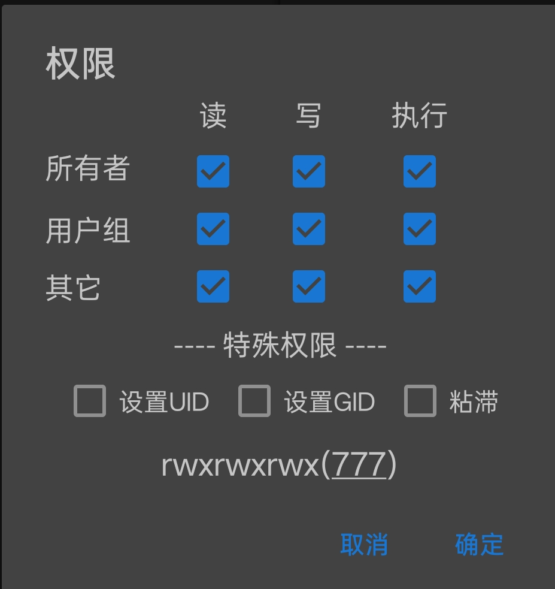

本教程仅针对本站开发的 shell。其余内容不适用本教程，使用方式以对应页面或原作者的说明为准。
一、准备终端工具
首先需要一个终端工具，二选一即可： 推荐 MT管理器， 或者使用 Termux 终端。 下面分别给出两种方式的操作说明，效果一致，用哪个看哪部分即可。
二、MT 管理器方式
以 MT 管理器为例，全程图形界面操作：
1.
下载文件后，把它复制或移动到 /data/ 下的任意文件夹，或直接放进 data 目录。
2.
长按文件打开「属性」，勾选 777 权限：

3.
返回文件列表，点击执行。出现文字提示后，按照提示与自己的需求选择即可。
三、Termux 方式
Termux 是纯命令行操作，以 1026_一键配置工具.sh 为例 （文件名请按你实际下载的为准）：
1.
切换到 root（设备需已获取 ROOT 权限）：
su
2.
把文件移动到 /data/：
mv /sdcard/Download/1026_一键配置工具.sh /data/下载路径不同的话，把 /sdcard/Download/ 换成实际位置。
3.
给指定文件赋 777 权限：
chmod 777 /data/1026_一键配置工具.sh
4.
执行：
cd /data &&./1026_一键配置工具.sh出现文字提示后，按照提示与自己的需求选择即可。